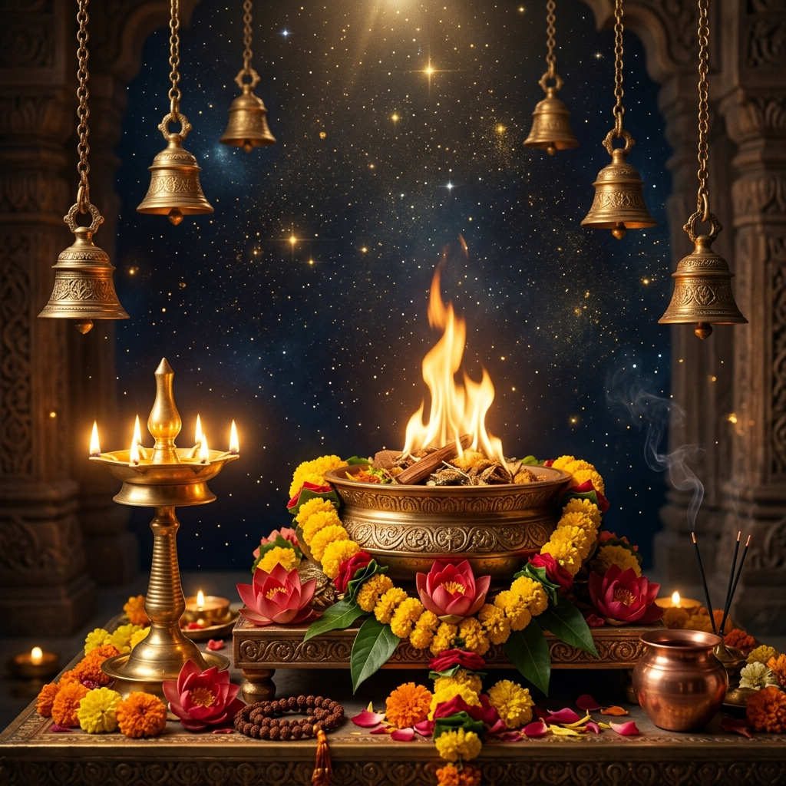

Maa Baglamukhi & The Power of Sacred Anushthan
The Supreme Mother of Stambhana Shakti. Explore the Puranic manifestation from Haridra Sarovar through Lord Vishnu’s penance, the Pandavas’ historic temple at Nalkheda, and the profound protective strength of traditional Anushthan.

Who is Maa Baglamukhi?
Among the ten Das Mahavidyas in ancient Tantra and Vedic Shastras, Maa Baglamukhi is the eighth divine manifestation of the Supreme Shakti. She is affectionately revered as Mata Pitambari because of her profound affinity for the color yellow (golden turmeric, yellow silken robes, and yellow flowers).
Her name originates from "Valga" (reins or bridle) and "Mukha" (face) — symbolizing the goddess who pulls the reins to control, paralyze, and still the turbulence of the universe. In iconography, the Divine Mother holds a mace (Gada) in her right hand while pulling the tongue of deceit with her left hand, symbolizing the absolute subjugation of untruth, ego, malice, and vocal malice.
Her primary cosmic power is Stambhana Shakti: the divine capability to freeze, silence, and immobilize negative forces, malicious plots, and inner confusion, transforming them into steadfast peace, fearless intellect, and divine clarity.
“Maa Baglamukhi does not destroy blindly; She stills the chaos of the mind and freezes the speech of malice, allowing righteous truth (Dharma) to triumph.”
The Divine Legends of Maa Baglamukhi
From the cosmic storm of Satya Yuga to the historic Mahabharata battle, discover how supreme deities and royals sought the grace of Mata Pitambari.
How Lord Vishnu Worshiped Maa Baglamukhi at Haridra Sarovar
According to the ancient Swatantra Tantra and Puranic scriptures, in the early dawn of Satya Yuga, a terrifying, Brahmanda-destroying tempest (Mahavinaashak Toofan) erupted across the cosmos. The cosmic storm grew so fierce that stars shook and all creation was on the verge of complete annihilation.
Distressed by the impending destruction of the universe, all the Devas, sages, and celestial beings rushed to Lord Vishnu, the cosmic preserver, pleading for salvation. Recognizing that ordinary celestial weapons could not quiet this primordial storm, Lord Vishnu retreated to the serene shores of Haridra Sarovar (the holy golden lake of turmeric in Saurashtra).
There, Lord Vishnu undertook intense, disciplined penance and Tapasya, immersing his consciousness into the heart of the Supreme Divine Mother Shakti. On the auspicious night of Vaishakh Shukla Chaturdashi, pleased by Vishnu’s unshakeable devotion, the Divine Mother manifested from the golden radiant waters of Haridra Sarovar.
How the Pandavas Built the Nalkheda Temple in Madhya Pradesh
Centuries later during the Dvapara Yuga, the great battle of Kurukshetra was imminent. The Pandavas, led by Dharmaraja Yudhishthira, faced seemingly insurmountable armies commanded by formidable warriors possessing divine astras.
Seeing the anxiety of Yudhishthira, Lord Sri Krishna advised the Pandavas that true righteous victory (Dharma Vijaya) required the supreme blessings of Maa Baglamukhi. Lord Krishna directed them to the sacred banks of the Lakhundar River in Nalkheda (in present-day Agar Malwa district, Madhya Pradesh).
Guided by Lord Krishna, Yudhishthira and his brothers built a sacred shrine and consecrated the miraculous Trishakti Idol of Maa Baglamukhi — uniquely flanked by Maa Lakshmi and Maa Saraswati. The Pandavas conducted rigorous Anushthan and Hawan, offering oblations of yellow mustard and turmeric.
The Holy Shrine of Nalkheda (Agar Malwa, MP)
Situated on the banks of River Lakhundar, the Nalkheda temple is one of only three supreme Baglamukhi Siddhpeeths in the world (along with Datia MP and Kangra HP). It is revered as a self-manifested (Swayambhu) seat of immense spiritual power where thousands of political leaders, jurists, business stalwarts, and everyday devotees travel for Hawan and Anushthan.
- Pandava-Established Hawan Kund: Ancient Vedic fire altar burning continuously for millennia
- Trishakti Darshan: Maa Baglamukhi seated harmoniously between Lakshmi and Saraswati
- Unfailing Sanctuary: Devotees seek prayer here during life's most complex legal and personal crises
Shastri Ji’s Sacred Connection
Shastri Amit Kumar Sharma has performed numerous sacred Baglamukhi Hawans and Anushthans aligned with the ancient traditions of Nalkheda and Datia Siddhpeeths.
Inquire About Hawan VidhiWhy Baglamukhi Anushthan is Useful
Maa Baglamukhi Anushthan is not an aggressive act; it is a sacred Vedic invocation of divine stillness, protection, and righteous resolution.
Legal Disputes & Justice (Nyaya Vijaya)
Traditionally sought by devotees trapped in prolonged court litigations, false allegations, or property disputes. The Anushthan invokes Stambhana Shakti so truth prevails over deception and malice.
Shield Against Negative Energies & Envy
When progress attracts hidden jealousy, workplace toxicity, or unseen malevolent intentions (Nazar Dosha), her divine golden shield creates an impenetrable barrier of spiritual protection.
Vak Stambhana (Silencing False Slander)
Maa holds the tongue of false accusers. For those facing defamation, unfair gossip, or broken promises in business, this worship silences hostile speech and clarifies misunderstandings.
Clearing Business & Career Blockades
Eliminates sudden, inexplicable financial deadlock, recovery of blocked funds, and corporate obstructions, instilling clear vision and strategic triumph in professional pursuits.
Elimination of Inner Fear & Anxiety
By calming the restlessness of the sub-conscious mind, Maa Baglamukhi dissolves chronic dread, night terrors, panic, and phobias, blessing the seeker with unshakeable inner courage.
Pacifying Mars, Saturn & Rahu-Ketu
Her golden fiery nature pacifies the sharpest afflictions of Mangal (Mars), Rahu Mahadasha, and Shani Sade Sati, balancing karmic turbulence into constructive spiritual focus.
Authentic Anushthan Discipline & Vidhi
How Shastri Amit Kumar Sharma conducts Maa Baglamukhi Anushthan with complete ritual sanctity in Jaipur.
Pure Satvik Samagri
Adherence to turmeric (Haldi), yellow mustard (Peeli Sarson), pure cow ghee, yellow flowers, and sacred lotus seeds.
Haldi Mala Japa
Prescribed counts (36,000, 1,25,000 chants) using energized turmeric rosaries on yellow silken asana.
Vedic Sankalp & Privacy
Every Hawan is dedicated to the devotee’s Gotra and Name. Absolute confidentiality of client circumstances is honored.
Online Devotee Sankalp
Devotees across India and abroad can join via live video conferencing while Shastri Ji performs the physical Hawan in Jaipur.
Seek Maa Baglamukhi’s Blessings with Shastri Amit Kumar Sharma
With over 1,000+ completed Anushthans since 1992, Shastri Ji provides personalized, sincere, and disciplined guidance for devotees seeking spiritual strength and protection.